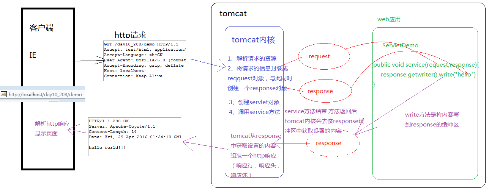

原文连接:https://www.cnblogs.com/cqyp/p/11479722.html
1．HttpServletResponse概述
service方法中的response的类型是ServletResponse，而doGet/doPost方法的response的类型是HttpServletResponse，HttpServletResponse是ServletResponse的子接口，功能和方法更加强大。
2．response的运行流程

3．通过response设置响应行
1）设置响应行的状态码
setStatus(int sc);
2）封装成一个重定向的方法sendRedirect(url);
response.sendRedirect("/WEB3/servlet2");
4．通过response设置响应头
addHeader(String name, String value);
addIntHeader(String name, int value);
addDateHeader(String name, long date);
setHeader(String name, String value);
setDateHeader(String name, long date);
setIntHeader(String name, int value);
add表示添加，而set表示设置;
5．通过response设置响应体
(1)响应体设置文本
PrintWriter getWriter()
获得字符流，通过字符流的write(String s)方法可以将字符串设置到response 缓冲区中，随后Tomcat会将response缓冲区中的内容组装成Http响应返回给浏览器端。
关于设置中文的乱码问题
原因：response缓冲区的默认编码是iso8859-1，此码表中没有中文，可以通过 response的setCharacterEncoding(String charset) 设置response的编码
但我们发现客户端还是不能正常显示文字
原因：我们将response缓冲区的编码设置成UTF-8，但浏览器的默认编码是本地系统的编码，因为我们都是中文系统，所以客户端浏览器的默认编码是GBK，我们可以手动修改浏览器的编码是UTF-8。
我们还可以在代码中指定浏览器解析页面的编码方式，
通过response的setContentType(String type)方法指定页面解析时的编码是UTF-8
response.setContentType("text/html;charset=UTF-8");
上面的代码不仅可以指定浏览器解析页面时的编码，同时也内含setCharacterEncoding的功能，所以在实际开发中只要编写 response.setContentType("text/html;charset=UTF-8");就可以解决页面输出中文乱码问题。
(2)响应头设置字节
ServletOutputStream servlet=response.getOutputStream()
获得字节流，通过该字节流的write(byte[] bytes)可以向response缓冲区中写入字节，在由Tomcat服务器将字节内容组成Http响应返回给浏览器。
设置定时刷新的头
response.setHeader("Refresh", "5;url=http://www.baidu.com");
7．案例-完成文件下载
1 //获得要下载的文件的名称
2 String filename =request.getParameter("filename");
3 //解决中文参数乱码
4 filename=new String(filename.getBytes("ISO8859-1"),"UTF-8");//编码
5
6 //获取请求头中的user-Agent
7 String agent=request.getHeader("User-Agent");
8 //根据不同浏览器，进行不同编码
9 String filenameEncoder="";
10 if(agent.contains("MSIE")) {//IE浏览器
11 filenameEncoder=URLEncoder.encode(filename,"UTF-8");
12 filenameEncoder=filenameEncoder.replace("+"," ");
13 }else if(agent.contains("Firefox")) {//火狐浏览器
14 BASE64Encoder base64Encoder =new BASE64Encoder();
15 filenameEncoder="=?utf-8?B?"
16 +base64Encoder.encode(filename.getBytes("utf-8")) + "?=";
17 }else {
18 //其他浏览器
19 filenameEncoder=URLEncoder.encode(filename,"UTF-8");
20 }
21
22 //要下载的这个文件的类型-----客户端通过文件的MIME类型去区分类型
23 response.setContentType(this.getServletContext().getMimeType(filename));
24 //告诉客户端该文件不是直接解析 而是以附件形式打开(下载)
25 response.setHeader("Content-Disposition", "attachment;filename="+filenameEncoder);
26 //获取文件的绝对路径
27 String path =this.getServletContext().getRealPath("download/"+filename);
28 //获得该文件的输入流
29 InputStream in =new FileInputStream(path);
30 //获得输出流---通过response获得的输出流 用于向客户端写内容
31 ServletOutputStream out =response.getOutputStream();
32 //文件拷贝的模板代码
33 int len=-1;
34 byte[] buffer =new byte[1024];
35 while((len=in.read(buffer))!=-1) {
36 out.write(buffer,0,len);
37
38 }
39 in.close();
40 }